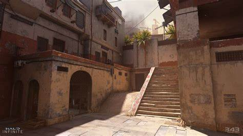
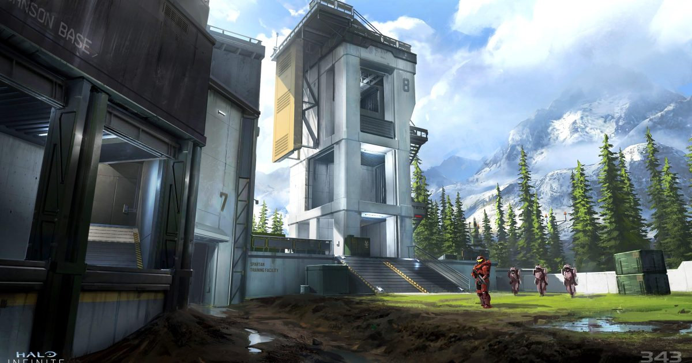

Mapa 1

Mapa 2

Mapa 3
Mapa 4
Reglas
¡Bienvenidos al torneo competitivo de Halo Infinite! Para asegurarnos de que todos los jugadores disfruten de la experiencia y se sientan en igualdad de condiciones, hemos establecido las siguientes reglas:
- Fair play: todos los jugadores deben jugar de manera justa y respetuosa. No se permiten trampas ni mal comportamiento en el chat o el micrófono.
- Selección de mapas: el primer equipo en la pantalla de selección de mapa será el equipo que elija el primer mapa, y el segundo equipo elegirá el segundo mapa. Este proceso se repetirá para cada juego de la serie.
- Configuración de partidas: cada partida se jugará con la configuración oficial del torneo y sin modificar. Los jugadores deben asegurarse de estar familiarizados con la configuración antes del inicio del torneo..
- Tiempo límite: cada partida tendrá un tiempo límite establecido. Si el tiempo límite se agota antes de que se complete la partida, el equipo con la puntuación más alta será declarado ganador.
- Empate: si las puntuaciones están empatadas al final del tiempo límite, la partida continuará en modo de muerte súbita hasta que se determine un ganador.
- Conexión: los jugadores deben tener una conexión estable y sólida para evitar retrasos y otros problemas de conexión. Si un jugador se desconecta durante una partida, se permitirá un reemplazo de jugador.
- Reinicio de la partida: si una partida se corrompe debido a un problema técnico, se permitirá un reinicio con la misma configuración y el mismo equipo..
- Abandono: si un jugador abandona una partida antes de que termine, el equipo contrario será declarado ganador. Si un equipo abandona dos partidas, el otro equipo será declarado ganador de la serie.
- Política de admisión: los jugadores deben registrarse previamente y cumplir con los requisitos de elegibilidad para poder participar en el torneo..
- Fecha y hora: El torneo se llevará a cabo el próximo sábado 14 de mayo a las 2 PM (hora local).
- Modo de juego: El modo de juego seleccionado para el torneo es el clásico Team Slayer, en el que dos equipos se enfrentan para acumular el mayor número de bajas posible.
- Premios: El equipo ganador del torneo recibirá un premio en efectivo de $20 USD y un trofeo conmemorativo. El segundo lugar recibirá un premio en efectivo de $10 USD
- Transmisión en vivo: El torneo será transmitido en vivo a través de nuestro canal de Twitch para que los espectadores puedan seguir la acción en tiempo real y animar a sus equipos favoritos.